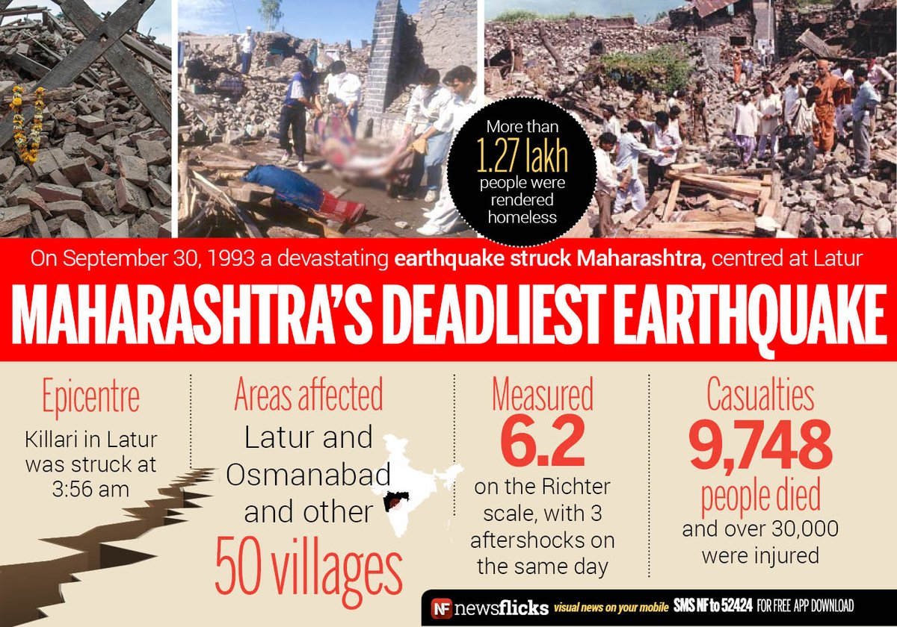

Latur is a district in Maharashtra state of India. It is the 16th largest city in Maharashtra with district headquarter located in the city. The district comes under Marathwada region of Maharashtra, geographically located between 17°52′ North to 18°50′ North and 76°18′ East to 79°12′ East in the Deccan plateau. It has an average elevation of 631 metres (2,070 ft) above mean sea level. The entire district is on the Balaghat plateau, 540 to 638 metres from the mean sea level.
The entire district is on the Balaghat plateau, 540 to 638 metres from the mean sea level. The major population of district is primarily agricultural. Urban population comprises 25.47% of the total population. Latur District is bound by Nanded District to the northeast; the state border with Karnataka to the east and southeast; Osmanabad District to the south-west; Beed District to the west; and Parbhani District to the northwest.
Latur earthquake of 1993 Main article: 1993 Latur earthquake On 30 September 1993, at 3:53 a.m. local time, Latur was almost completely destroyed by a devastating intraplate earthquake that affected the southern Marathwada region of Maharashtra state in central-western part of India—including Latur, Beed, Osmanabad, and adjoining districts about 400 kilometres (250 mi) south-east of Mumbai—and resulted in a huge loss of life. The earthquake measured only 6.3 on the Richter magnitude scale, but its focus was relatively shallow, at around 12 kilometres (7.5 mi) deep. Consequently, the resultant shock waves, being unattenuated, caused more damage. The quake caused around 10,000 deaths [14] and 30,000 were injured, mainly due to the poor construction of stone houses and huts which collapsed on people who were fast asleep. After the earthquake, seismic zones were reclassified, and building codes and standards revised, all over India
Local administration
Main article: Latur Municipal Corporation
Office of Collector, Latur
Latur has an earlier Municipal Council, which was established in 1952. Latur Municipal Corporation (LMC) is the local civil body. It is divided into five zones. The Municipal Corporation area is about 117.78 square kilometres (45.48 sq mi). It was elevated to the status of Municipal Corporation by the State Government in 2011.
The Urban Development Dept., Govt. of Maharashtra expressed its desire vide letter dated 30/10/2006 to notify fringe area of Latur and appoint CIDCO as its Special Planning Authority. CIDCO has submitted its proposal to notify the fringe area measuring approx. 26541.00 ha. inclusive of urbanisable zone of about 16696 ha. Govt. has appointed CIDCO as Special Planning Authority. The notified area covers 40 villages on the fringe of Latur Municipal Corporation. It is envisaged in the project not to acquire 100% land but to adopt minimum land acquisition model for development of infrastructure and growth corridors.
The city is divided in 70 electoral wards called as Prabhag and each ward is represented by a Corporator (called as Nagarsevak) elected by the people from each ward. LMC is responsible for providing basic amenities such as drinking water, drainage facility, road, street lights, healthcare facilities and primary schools. LMC collects its revenue from the urban taxes which are imposed on citizens. The administration is headed by the Commissioner of Municipal Corporation; an I.A.S. Officer, assisted by the other officers of different departments.

Trade and industries
The city is a major sugarcane and edible oils, soybean, grapes and mango production centre. A fine blend of mango with locally grown mangoes was developed as Keshar Amba. Oil seeds was the major produce of Latur region. So for benefit of farmers Keshavrao Sonavane had established Dalda Factory which was Asia's first oil mill set up on cooperative terms.[21]
Till 1990, Latur languished as a city, remaining an industrially backward. In 1960, region of Marathwada was merged with Maharashtra. This was the time when the industrial development of the Marathwada region began, propelled through designated backward area benefits. Latur got its first MIDC setup during the tenure of then Co-operative minister Keshavrao Sonavane. It was only when the MIDC (Maharashtra Industrial Development Corporation) began acquiring land and setting up industrial estates that it began to grow. Many companies have manufacturing plants in Latur, in agriculture processing, edible oils, biotech, consumer durables, plastic processing, and aluminium processing; but the majority are small- and medium-scale agricultural industries, not industrial ones.
Latur has the largest trading centre for soybean in India. The green city is inside what is called 'Sugar Belt' of Maharashtra. The district has more than eleven sugar factories, which makes it among the highest sugar-producing districts of India. It also has oil seeds, commodities and fruit market.
Latur is also known for high quality grapes and houses many state and privately owned cold storage facilities. A grape wine park spread over 1.42 square kilometres (350 acres) has been established near Ausa, 18 km from Latur city. A brand new Latur Food Park, spread across 1.2 square kilometres (300 acres) is under construction at Additional MIDC Latur. Latur is major transport junction to south India.
Latur sugar belt:
The Latur region is known as the "Sugar Belt of India". This region houses over eleven large sugar factories. Most of the sugar factories of the Latur sugar belt work on the co-operative basis. Latur got its title "Sugar Belt of India" largely due to the efforts of its cooperative political leader Keshavrao Sonawane, who was instrumental in setting up several co-operative institutions in Latur, Osmanabad, and elsewhere in Maharashtra.
MIDC industrial areas in Latur
Latur Industrial Area
Additional Latur Phase I Industrial Area
Additional Latur Phase II Industrial Area
Latur Co-Operative Industrial Estate
Murud taluka Co-Operative Industrial Estate
Chakur Co-Operative Industrial Estate
Udaygiri Co-Operative Industrial Estate
Ausa Industrial Area
Ahmedpur Industrial Area
Nilanga Industrial Area
Udgir Industrial Area
Specialised industrial parks and export zones in Latur:
Latur Food Park
Latur Infotech Park
Latur Integrated Textile Park, Latur
Bombay Rayon Fashions, Latur
Grape Yards, Ausa
Chamber of Commerce and industry associations
Latur Chamber of Commerce, Latur
Latur Manufacturers Association, MIDC
Engineers and Architects Association, Latur
Latur Builders Association, Latur
Computers and Media Dealers Association (CMDA), Latur
Latur Branch of the Western India Regional Council of the Institute of Chartered Accountants of India